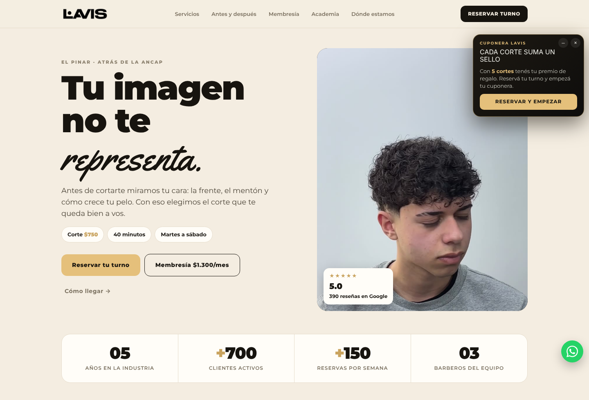
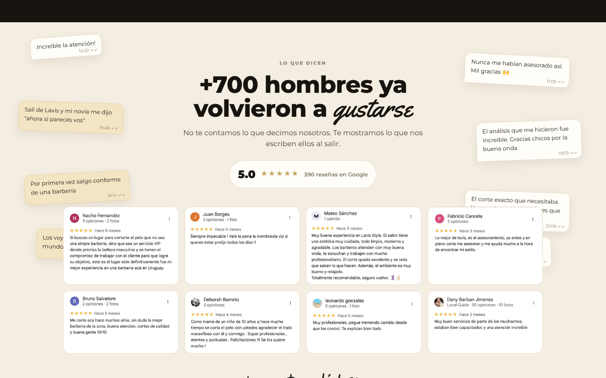
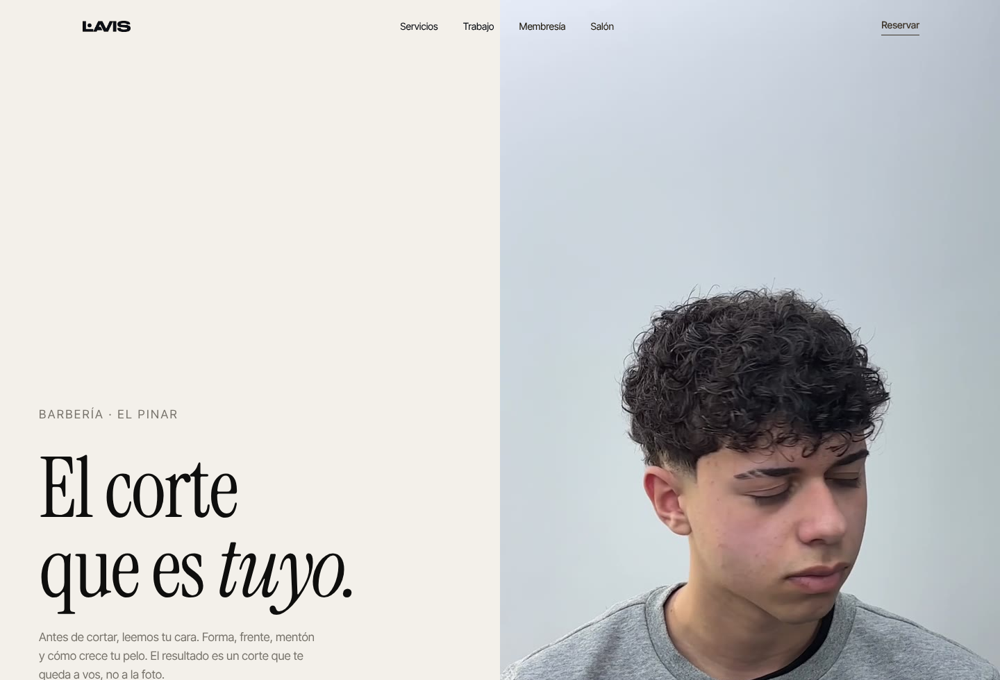
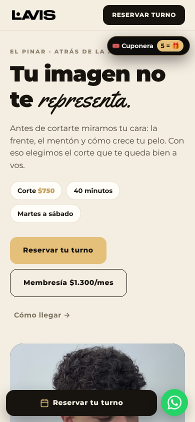
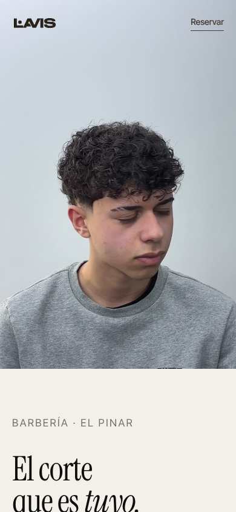
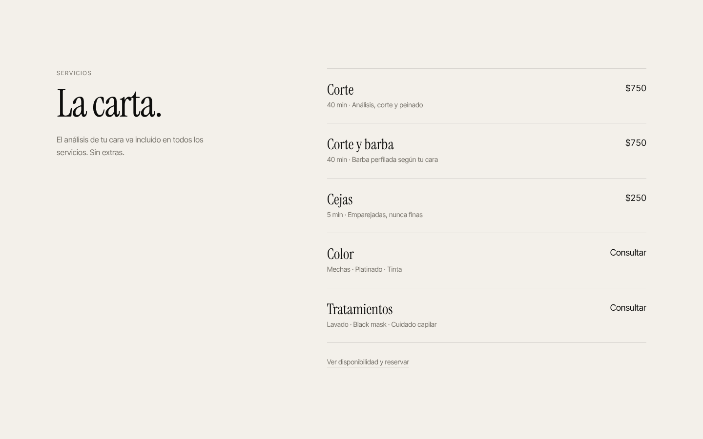

Auditoría web · Propuesta de imagen
Una web a la altura
de la silla.
Análisis de lavis-studio.vercel.app, inventario completo del sitio actual y dirección de rediseño para Lavis Studio, El Pinar.
Auditoría web · Propuesta de imagen
Análisis de lavis-studio.vercel.app, inventario completo del sitio actual y dirección de rediseño para Lavis Studio, El Pinar.
00 — Resumen
Lavis tiene 5.0 en Google con 390 reseñas, +700 clientes y una agenda llena. La web, en cambio, se ve como una plantilla genérica: muchos elementos, mucho color dorado y poca personalidad. La propuesta es simple: menos, pero mejor.
01 — Debilidades principales
Crema con dorado, Montserrat en negrita y una palabra en cursiva en cada título. Tarjetas redondeadas, pastillas y contadores grandes. Es el patrón de cualquier generador automático: no se ve Lavis.
“Tu imagen no te representa” le dice al cliente que se ve mal. Una barbería top transmite confianza y aspiración, no culpa.
Popup de cuponera, WhatsApp flotante, barra de reserva, 8 burbujas de chat, 8 capturas de reseñas, audio, contador 85/150 y tarjeta VIP. Todo compite; nada se destaca.
Mensajes con hora y doble check sin nombre se leen como inventados. Las reseñas son imágenes: ilegibles en el celular e invisibles para Google.
La sección muestra 4 retratos terminados. La promesa del título no se cumple.
Al abrirla hay 4 botones sobre la foto principal y la cuponera tapa el texto de ubicación. La mayoría del tráfico llega desde Instagram, o sea desde el celular.
Cada foto con otro fondo y otra luz, todas de celular. Es lo que más baja la percepción premium.
Corte y Corte con barba a $750 (parece un error). La membresía compite con el servicio principal.
Cuatro tipografías sin un rol claro (Montserrat, Archivo Black, Yellowtail, Times). El logo es bueno; la web no lo acompaña.
Sin dominio propio (.vercel.app). “Lavis Style” en Google Maps y “Lavis Studio” en la web. Imagen para compartir con ruta relativa y sin datos estructurados para Google.


02 — Inventario del sitio actual
Secciones de la home
Páginas
Integraciones
Assets y stack
03 — Dirección de rediseño
El visagismo deja de ser un argumento gritado y pasa a ser el método de la casa. Un mensaje por sección, un solo botón principal: Reservar.
Paleta
Sin dorado. El color lo ponen las fotos.
Tipografía
Instrument Serif
Títulos y precios
Inter Tight
Texto y botones. Sin cursivas decorativas.
Servicios como en un buen restaurante: nombre, precio y una línea. Líneas finas, sin tarjetas.
Grilla de cortes en blanco y negro que toma color al pasar el mouse. Coherente y editorial.
Tres citas reales con nombre y un 5.0 grande con link a Google. Más creíble y legible.
Sin popup, burbujas ni contadores. En el celular, una sola barra: Reservar y WhatsApp.
Membresía, academia y preguntas en bloques tranquilos, fuera del recorrido principal.
De “no te representa” a “el corte que es tuyo”. Confianza en lugar de culpa.
04 — Antes y después




05 — Más allá del código
5.0
390 reseñas en Google. El mejor activo de Lavis ya existe: la web solo tiene que dejarlo hablar.
06 — Próximos pasos
Revisar el prototipo con el equipo de Lavis y ajustar tono y mensajes.
Antes de cerrar el diseño final. Es la pieza que más eleva la percepción.
Aplicar el mismo estilo a /reservar y /mi-cuenta para una experiencia continua.
Dominio propio, nombre unificado en Google Business y link nuevo en la bio.
“No hay un corte de moda.
Hay un corte para cada cara.”
El Pinar · Ciudad de la Costa · Uruguay